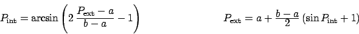

Next: Minuit Strategy.
Up: Minuit Basic Concepts
Previous: The Organization of Minuit.
Index
Subsections
Each of the parameters to FCN is defined by the user as belonging to
one of the following types:
- Freely variable:
- allowed to take on any value.
- Variable with limits:
- allowed to vary only between two limits specified by the user.
- Fixed:
- originally defined as variable, but now taking on only the
value the parameter had at the moment it was fixed,
or a value later assigned by the user.
- Constant:
- taking on only one value as specified by the user.
- Undefined:
- never defined by user.
The user, in FCN, must of course be able to ``see'' all types of
defined parameters,
and he therefore has access to what we call the
external parameter list, that is, the parameters as he
defined them.
On the other hand, the internal Minuit minimizing routines only want to ``see''
variable parameters without limits, and so they have access only to the
internal parameter list which is created from the external list
by the following transformation:
- 1.
- Squeeze out all parameters that are not variable.
- 2.
- Transform all variable parameters with limits, so that the transformed
parameter can vary without limits.
(See the next section for details concerning this transformation.)
Because this transformation is non-linear, it is recommended to avoid
putting limits on parameters where they are not needed.
As an example, suppose that the user has defined the following parameters:
- Parameter 1, constant.
- Parameter 3, freely variable.
- Parameter 10, variable with limits.
- Parameter 11, constant.
- Parameter 22, freely variable.
- All others undefined.
Then the internal parameter list would be as follows:
- Internal parameter 1 = external parameter 3.
- Internal parameter 2 = external parameter 10, transformed appropriately.
- Internal parameter 3 = external parameter 22.
In the above example, Minuit considers that the number of external parameters
is 22 (the highest external parameter number defined), and the number of
internal parameters is 3. The latter number is passed as NPAR to FCN.
This is the number which determines, for example, the size of the error matrix
of the parameters, since only variable parameters have errors.
An important feature of Minuit is that parameters are allowed to change
types during a Minuit run. Several Minuit commands are available to make
variable parameters fixed and vice-versa; to impose, change, or remove limits
from variable parameters; and even to define completely new parameters at any
time during a run. In addition, some Minuit routines (notably the MINOS error
analysis) cause one or more variable parameters to be temporarily fixed during
the calculation. Therefore, the correspondence between external and internal
parameter lists is in general a dynamic one, and the value of NPAR is not
necessarily constant.
For variable parameters with limits, Minuit uses the following transformation:

so that the internal value
Pint can take on any value, while
the external value
Pext can take on values only between the lower
limit a and the upper limit b.
Since the transformation is necessarily non-linear, it would transform a
nice linear problem into a nasty non-linear one, which is the reason why
limits should be avoided if not necessary.
In addition, the transformation
does require some computer time, so it slows down the computation a little
bit, and more importantly, it introduces additional numerical inaccuracy into
the problem in addition to what is introduced in the numerical calculation
of the FCN value.
The effects of non-linearity and numerical roundoff both
become more important as the external value gets closer to one of the limits
(expressed as the distance to nearest limit divided by distance between limits).
The user must therefore be aware of the fact that, for example,
if he puts limits of (0,1010) on a parameter, then the values 0.0
and 1.0 will be indistinguishable to the accuracy of most machines.
The transformation also affects the parameter error matrix, of course,
so Minuit does a transformation of the error matrix (and the
``parabolic'' parameter errors) when there are parameter limits.
Users should however realize that the transformation is only a linear
approximation, and that it cannot give a meaningful result if one or more
parameters is very close to a limit, where
.
Therefore, it is recommended that:
- Limits on variable parameters should be used only when needed in order
to prevent the parameter from taking on unphysical values.
- When a satisfactory minimum has been found using limits, the limits
should then be removed if possible, in order to perform or re-perform the
error analysis without limits.
Further discussion of the effects of parameter limits may be
found in the last chapter.
Next: Minuit Strategy.
Up: Minuit Basic Concepts
Previous: The Organization of Minuit.
Index
Back to
CERN
| IT
| ASD
| CERN Program Library Home
MG
(last mod. 1998-10-30)